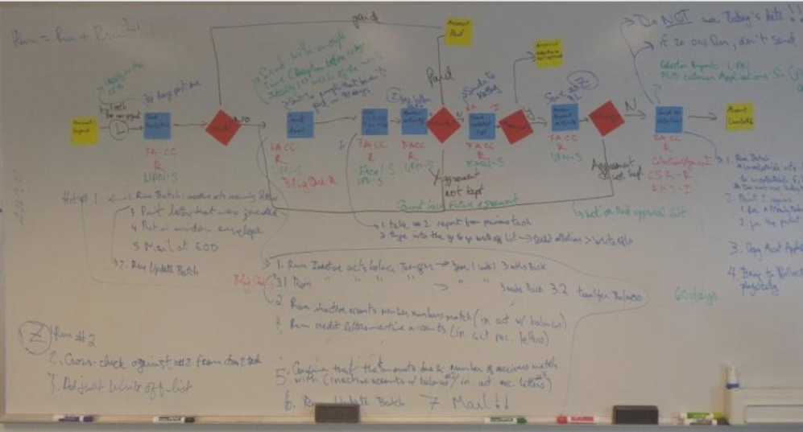
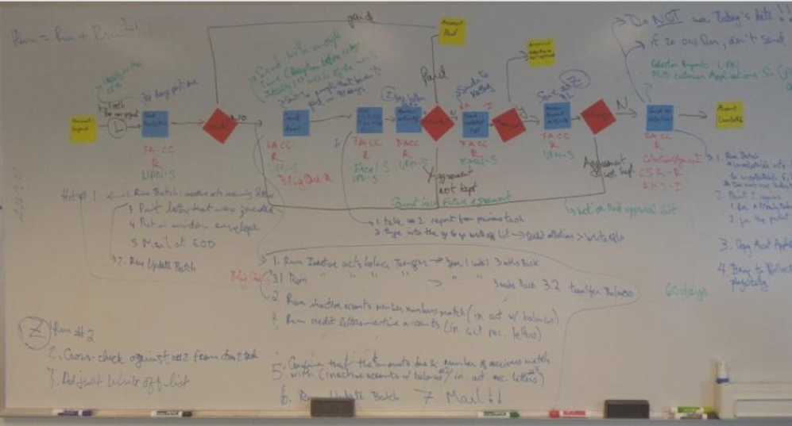
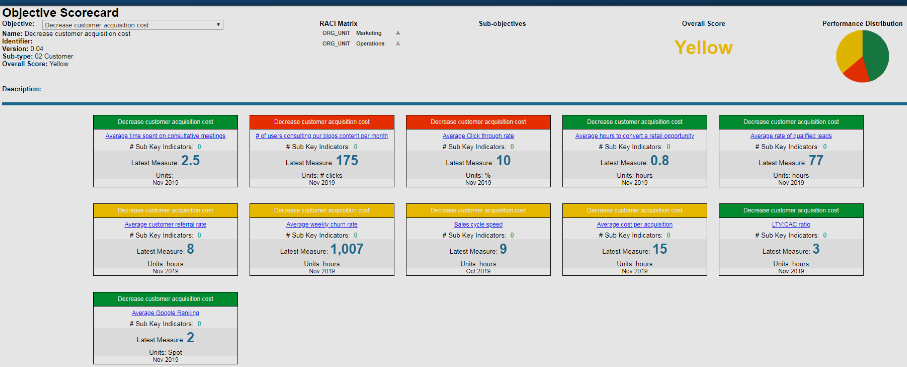
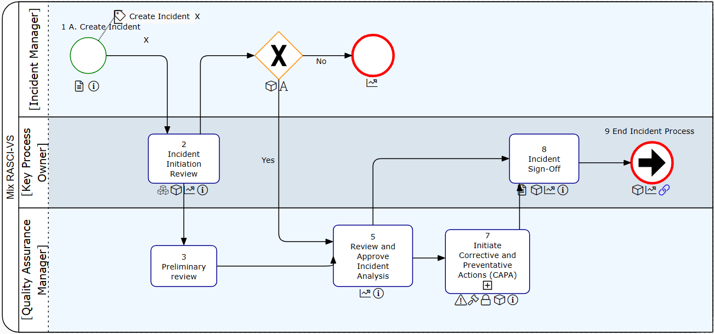
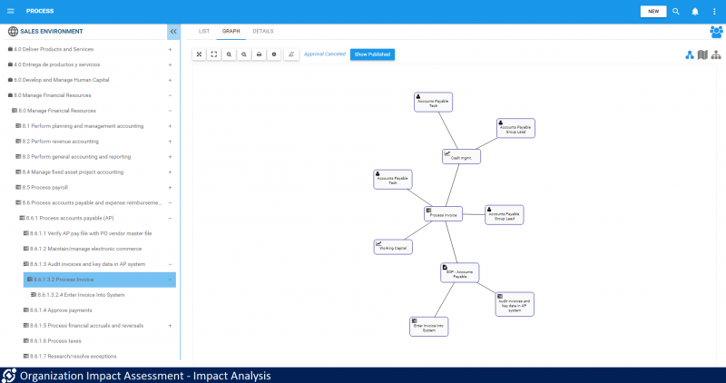

Interfacing Technologies
Business Process Management Solutions
From building world class enterprise management software to traveling to the world's outer reaches for consulting projects, this gig taught me so much about myself and my potential.
interfacing.comProcess Automation
Replacing paper with software
One of the most fascinating parts of our work at Interfacing Technologies was helping Fortune 500 companies automate complex business processes. Picture an enterprise managing spreadsheets, documents, KPIs, and data from multiple places. Our challenge? Simplify and unify it all.
We built software that centralized operations into one system, powered by a single database. This made reporting, data management, and automated communication seamless, while giving full visibility across departments.
Our solutions spanned engineering, maintenance, business, and legal teams. Designing systems that handled e-forms, notifications, and real-time reports was both rewarding and impactful, knowing they kept critical processes running smoothly.
My academic background in supply chain management and tech analysis blended perfectly with this role. Previous experience taught me to improve workflows before automating, echoing Bill Gates' sentiment that automation magnifies inefficiency.
I wore many hats: business analyst, development lead, and even data migration specialist. Transforming and integrating data from multiple sources into our software was challenging but leveled up my SQL skills, making every project an opportunity to grow.
Management Consulting
From boardrooms to the jungle
 

Our consulting work took me around the globe, collaborating with Fortune 500 companies to refine their business processes. Unlike our software-focused projects, this work centered purely on traditional business process management. We led extensive workshops with stakeholders, mapping out workflows, identifying risks, inefficiencies, KPIs, and the systems in play. From there, we helped redesign and optimize processes, applying methods akin to Six Sigma, emphasizing efficiency and measurable improvements.
It was an experience unlike any other for a young consultant. At twenty-five to twenty-eight years old, I found myself in the room with seasoned professionals, leading high-stakes discussions. The work demanded a blend of confidence, knowledge, and adaptability, especially when working thousands of kilometers from home. I had to quickly master disciplines like risk management, performance, and data governance while speaking the language of various business functions.
The job's global nature was unique. Unlike typical consulting firms that often operate within specific regions, our work was international. My assignments took me to places like Gabon, South America, and Oceania. Before heading to some locations, like the deep jungles of Gabon for a major mining client, I had to get vaccinations for yellow fever and typhoid—an adventure in itself. My ability to speak French and Spanish opened doors to projects that many consultants never get to experience, giving me an even broader perspective.
Each project was a crash course in a different industry. I absorbed knowledge about mining operations, manufacturing intricacies, logistics challenges, and utility management. In Oregon, for example, I worked with a power utility, gaining an understanding of collaborative processes between data centers and power plants. Listening to experts explain the mechanics of their world was a masterclass in real-world business operations, one that has left a lasting impact on me.
Building the Reporting Suite
How we quadrupled product usage with BI
Early in my career, I embarked on an unexpected journey into business intelligence (BI) at Interfacing Technologies. As a junior analyst learning SQL, I found myself navigating the company’s complex, object-based repository, where interconnected elements like processes, risks, and KPIs formed a rich web of data relationships. This structure was intimidating yet full of potential for generating deep client insights.
Clients often struggled with the software’s rigid, outdated reporting capabilities, so I took on the challenge of designing a full BI suite from scratch. Immersing myself in SQL and the database architecture, I created nearly 100 tailored reports. For risk management, I built a visual heat map and a comprehensive risk register. For performance management, I developed dashboards linking KPIs to strategic outcomes, helping clients see how each part of their business was performing.
This technical experience was transformative. I mastered SQL, refined my analytical thinking, and turned raw data into actionable insights. The impact was clear: product usage increased fourfold as clients embraced these new reports. They were motivated to engage with data in ways that made better operational sense, empowering their decision-making and driving performance.
A One-Person Product Army
How a world-class management system kicked off my career in product
 When I joined Interfacing, I had no idea what I was getting myself into. We made the company’s flagship product, the Enterprise Process Center (EPC), into a powerhouse of functionality. We built in the ability to model processes, analyze risks, generate standard operating procedures, identify roles and responsibilities, monitor KPIs, map data flows, identify network dependencies, and so much more.
This kind of functionality was needed for ops, quality and compliance, and risk management teams. It offered governance features like approval workflows and audit logs, ensuring strict adherence to regulations.
The demands of the role extended far beyond typical product management. I created marketing content, trained users, led product demos, answered countless RFPs, took on customer support calls, developed sales decks, led implementions and even oversaw change management. Engaging with our user community, I organized webinars and built relationships with power users, fostering a loyal customer base.
Even though I was junior in title, I shouldered responsibilities that today would be divided among specialized teams. The exposure was invaluable, and it gave me a deep appreciation for balancing complexity and usability, preparing me for any product challenge I would face in the future.